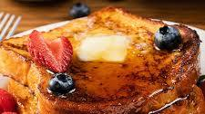

French Toast

Description
This fabulous French toast recipe works with many types of bread — white, whole wheat, brioche, cinnamon-raisin, Italian, or French! Delicious served hot with butter and maple syrup.
Ingredients
- 6 thick slices of White Bread
- 2 Eggs
- 2/3 Cup of Milk
- 1 teaspoon of Vanilla Extract
- 1/4 teaspoon of ground cinnamon
- Salt to taste
- 1 tablespoon of unsalted butterButter
Step by step
- Whisk milk, eggs, vanilla, cinnamon and salt together in a bowl
- Lightly butter a griddle or skillet and heat over medium-high heat
- Dunk bread in the egg mixture
- Transfer to the hot skillet and cook until golden
- Serve hot